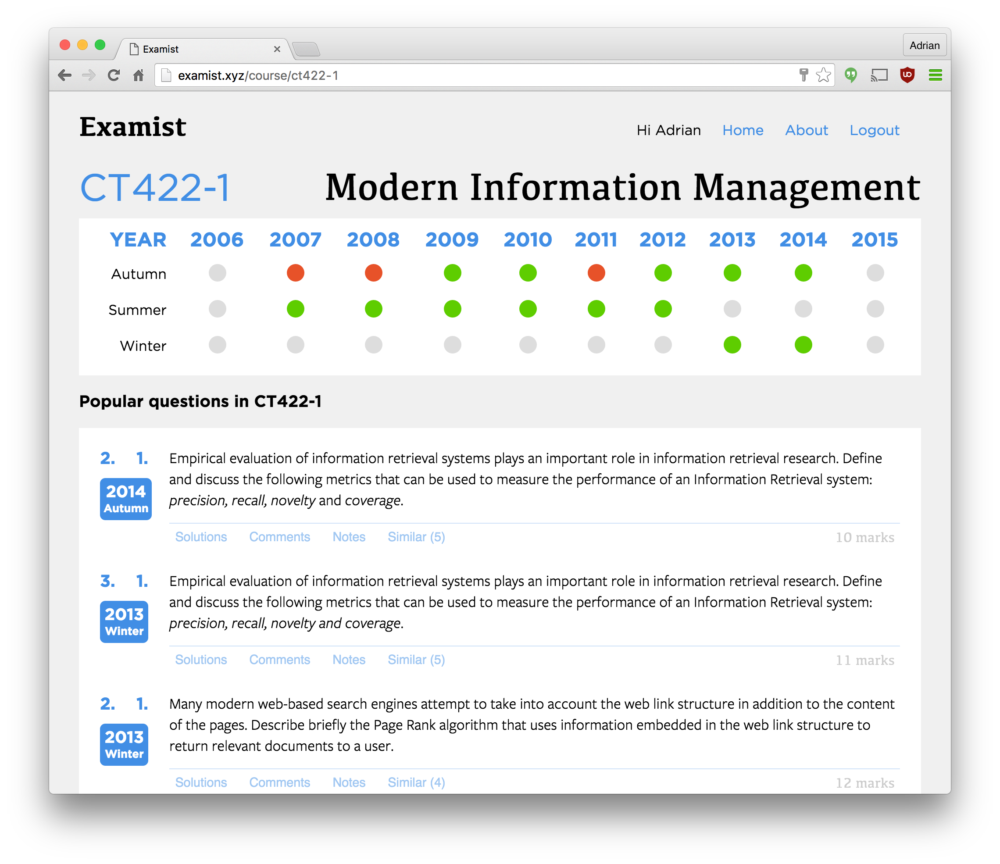

2. Design
2.1 Architecture
The project's architecture can be separated into two sections, the frontend and the backend.
Frontend

The frontend of the application describes the user facing aspect of the application. All user interaction with the software takes place via this interface.
The front facing aspect of this project is a large Javascript application based on React and Redux with many other modules. It is entirely dynamic and never loads any HTML or CSS aside from the initial index.html page load (which is only 15 lines long). The application itself has many internal components itself which are detailed more in the Frontend section of the Implementation chapter but a brief overview:
- An internal URL router for the view layer.
- A single, immutable, global application state object.
- Composable component based UI split into "smart" and "dumb" components.
Frameworks & Libraries
- React - The library behind the User Interface portion of the application.
- Redux - For managing the global application state and updates.
- React Router - The applications internal router for the view layer.
It also happened that on Feb. 28, 2016 (months after choosing the technology set), an article published titled "State of the Art Javascript in 2016" follows exactly the same choices for technologies as the project.
Decision process
Picking a library to base your Javascript application is not easy. The ecosystem is constantly changing and there are a plethora of libraries released backed by the biggest names in technology which makes it a hard choice. The decision to go with React and Redux was moreso for the learning experience, rather than a technology fit for the application. On a personal level, after much review of other frameworks and their communities, I feel as though React and the concepts behind Redux will be the outright leader in the frontend world for years to come.
Backend
The backend of the application is what the frontend interfaces with. It's an exposed REST API that sends and receives JSON. The language powering it is Python and the framework behind it is Flask. Flask is a web simple framework but is also feature complete. It has fantastic documentation along with a large, active community surrounding the project. SQL Alchemy is ORM and database interface for the application.
To power the database side of things, PostgreSQL was chosen because it is best in class for RDBMS systems. Postgres has world class product and documentation which is all entirely open source.
Flask is unsuitable to handle large volumes of traffic and requires a load balancer to sit in front of the users. To balance the load and also serve static content, Nginx is deployed in front of the Python application.
Frameworks & Libraries
- Flask - Flask is a small Python web framework with a large feature set.
- SQL Alchemy - A fully featured, best-in-class Object-Relational Mapper (ORM).
- Marshmallow - A library for serialising, deserialising and validating data.
- Scikit Learn - Simple and efficient tools for data mining and data analysis.
Decision Process
The decision to choose Python as the main language for the backend was not an easy one. I personally have worked almost exclusively in Node.js for my API requirements to date and it would have fit perfectly with the Javascript frontend however I wanted to challenge myself. By using other frameworks and languages, you gain new perspective on things and can better understand how to learn new technologies. Python also has extensive collection of libraries for machine learning (ML) and data mining aspect which helped make the decision easier because they would come in handy for the ML parts of the application.